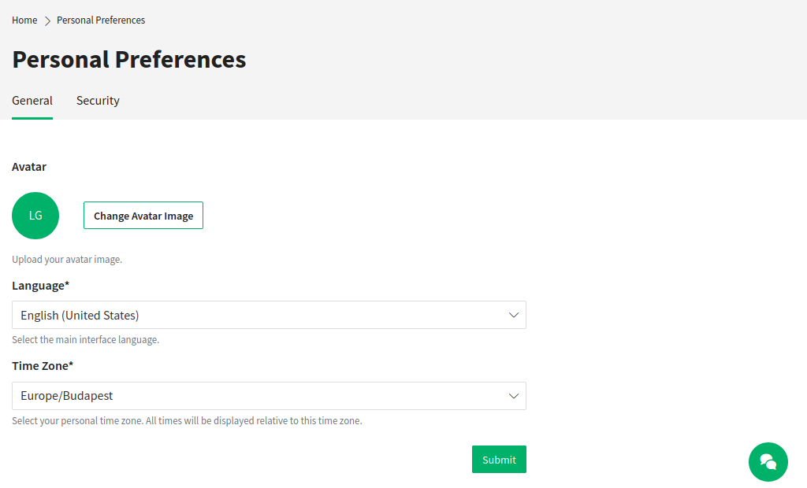
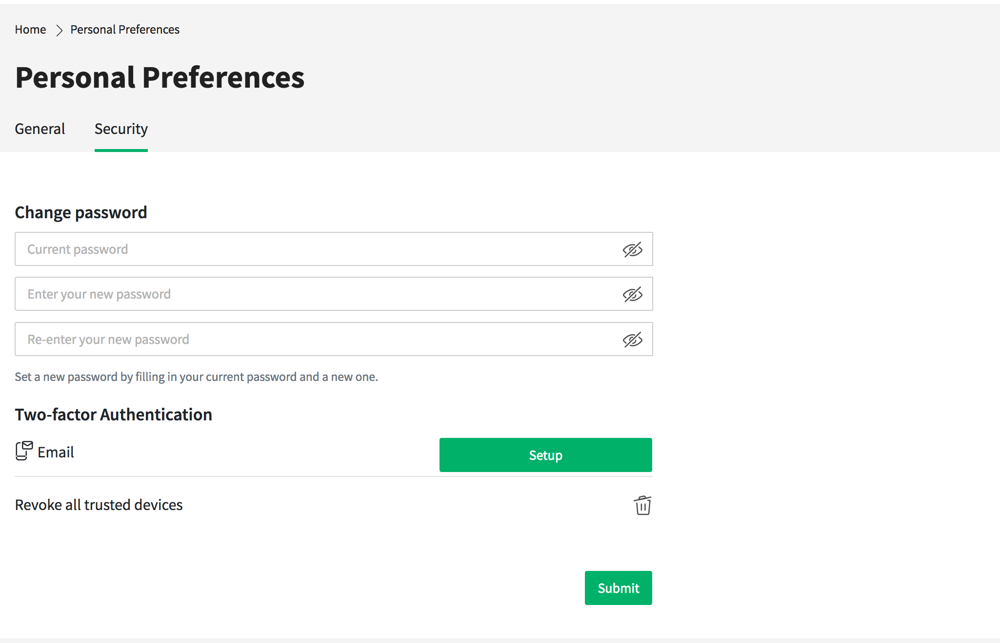

Personal Preferences¶
The personal preferences view contains the sections General and Security.
Note
The content of your Personal Preferences may vary depending on the settings made by the system administrator.
General¶

Personal Preferences - General
In the section General the customer user can change his avatar image, the language of the external interface and the preferred time zone.
Security¶

Personal Preferences - Security
In the section Security the customer user can change his password and the settings for the two-factor authentication.